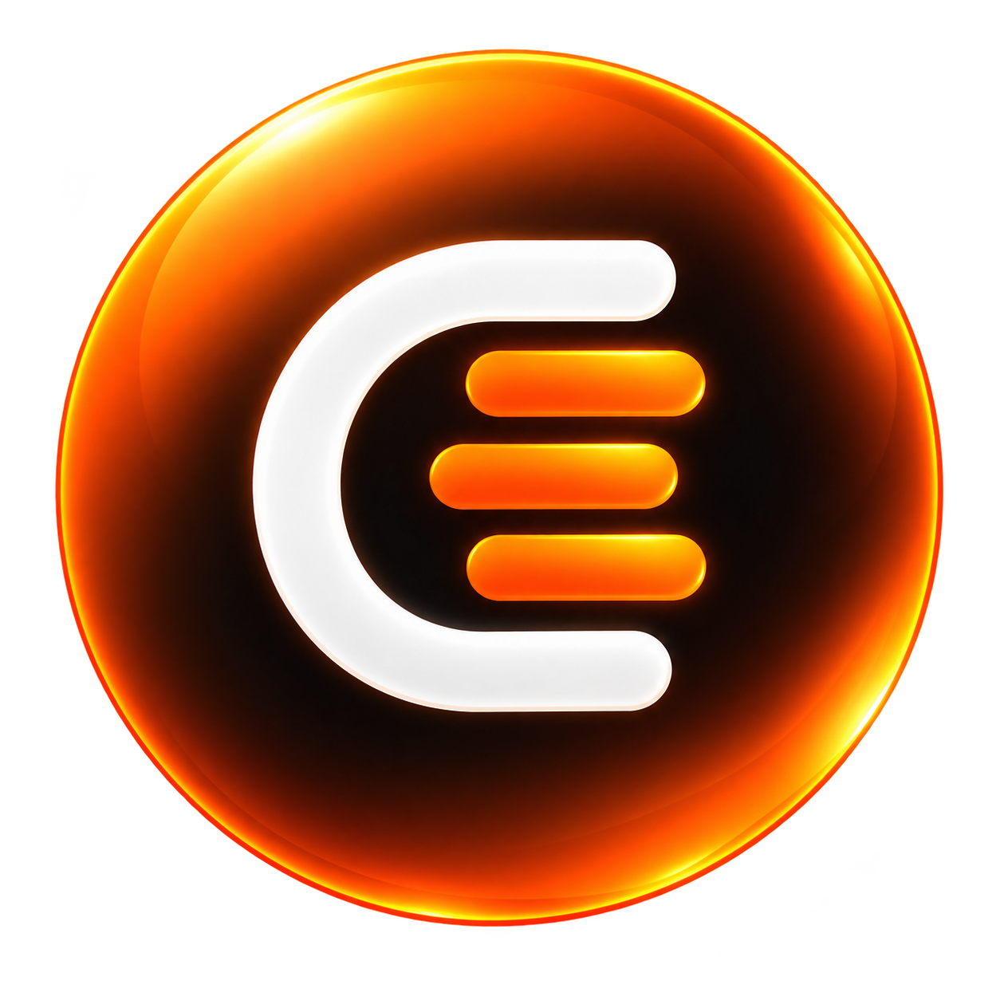

Pare deprocurar.Comece aencontrar.
Chamado, cliente, responsável, prazo, peça, orçamento, teste, garantia e entrega precisam contar a mesma história. O CentralOS coloca essa história em ordem — e mantém a equipe olhando para o próximo passo, não procurando o último.
É trabalho sem contexto.
Quando a informação está em conversa, papel, memória, planilha e tela diferente, qualquer tarefa simples vira investigação. Arraste a divisão abaixo: do lado esquerdo, cada informação vive sozinha; do lado direito, ela passa a fazer parte da OS.
Entrada confirmada
Responsável: Técnico
Aguardando decisão
Compra registrada
Retomar reparo
Ela atravessa a empresa.
Tudo começa com contexto.
Cliente, equipamento, defeito e prazo entram juntos.
A equipe não precisa reconstruir a história depois.
É a operação vista pelo trabalho real.
Explore os módulos. Em vez de uma página cheia de frases vagas, cada área abaixo representa uma parte do fluxo que existe dentro do CentralOS.
 Visão demonstrativa dos módulos
Visão demonstrativa dos módulosChamados
A OS caminha por filas, responsáveis e decisões.
Clientes
O atendimento deixa de ser uma coleção de OS isoladas.
Notebook · não liga
Atualização sobre prazo de análise
Smartphone · conector substituído
Agenda
Prazos operacionais deixam de ser lembretes soltos.
Estoque e peças
Compra, previsão e uso da peça ficam ligados ao trabalho.
Garantia
O retorno não começa do zero: ele volta para a origem.
Reparo registrado
Motivo vinculado ao atendimento original
Tratativa registrada na mesma história
Equipe
Cada papel enxerga o trabalho que precisa executar.
A operação para quem decide.
O administrador enxerga gestão, configurações e o panorama do trabalho sem tirar da equipe as telas específicas que cada função precisa.

Está no que passa de um para o outro.
Quando uma OS muda de etapa, a operação inteira ganha contexto: atendimento sabe o que responder, técnico sabe o que executar, gestão sabe onde existe espera e o histórico continua inteiro.
O que o CentralOS organiza?
Seu trabalho já é complexo. Encontrar informação não precisa ser.
Coloque a operação da assistência técnica em uma central onde chamados, pessoas e próximos passos façam parte da mesma história.